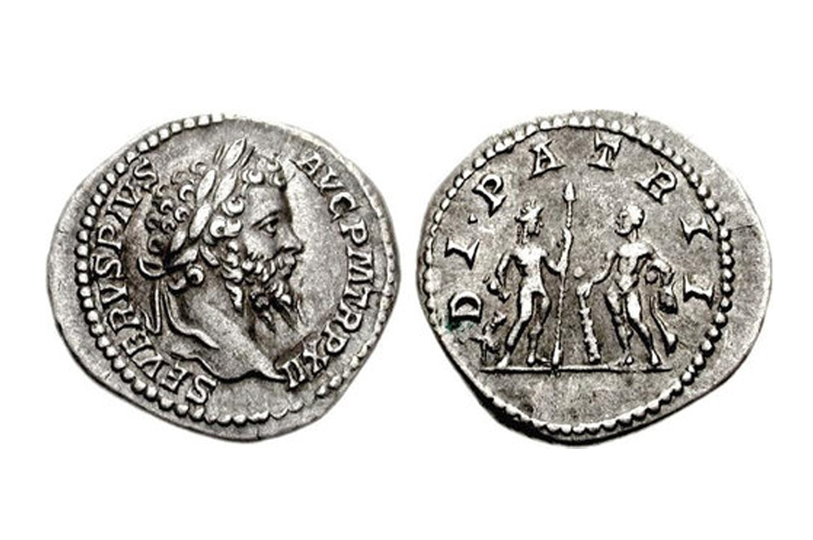

Претворити Македонија денари (MKD) и Српске динара (RSD) : Мењачница стопу конверзије калкулатор
 CoinMill.com - Konvertor Valuta Добродошли! Login
Македонија денари (MKD) и Српски динар (RSD) Мењачница стопу конверзије калкулатор
Додајте свој коментар на ову страницуОво Македонија денари и Српски динар Конвертор је до данас са девизни курсеви од 13. септембар 2020.
Унесите износ који конвертујете у поље са леве стране Македонија денари. Користите "свап" валуте како би Српски динар подразумевана валута. Кликните на Српске динара или Македонија денари за конверзију између тој валути и свим другим валутама.
Македонија денари је валута у Македонија (Бивша Југословенска Република, МК, МКД). Српски динар је валута у Србија (РС, СРБ). Српски динар је такође познат као Српски динар. Симбол за MKD може бити написана MKD. Македонија денари је подељен на 100 deni. Курс за Македонија денари је последњи пут ажуриран 13. септембар 2020 од Иахоо Финансије. Курс за Српски динар је последњи пут ажуриран 13. септембар 2020 од Иахоо Финансије. MKD Конверзија фактор има 4 значајне цифре. RSD Конверзија фактор има 5 значајне цифре.
MKD RSD coinmill.com 50.0 95.5 100.0 191.0 200.0 381.5 500.0 954.0 1000.0 1908.0 2000.0 3816.0 5000.0 9539.5 10,000.0 19,079.5 20,000.0 38,158.5 50,000.0 95,396.5 100,000.0 190,793.0 200,000.0 381,586.5 500,000.0 953,966.0 1,000,000.0 1,907,932.5 2,000,000.0 3,815,865.0 5,000,000.0 9,539,662.5 10,000,000.0 19,079,324.5 MKD стопа
13. септембар 2020 RSD MKD coinmill.com 50.0 26.0 100.0 52.5 200.0 105.0 500.0 262.0 1000.0 524.0 2000.0 1048.5 5000.0 2620.5 10,000.0 5241.5 20,000.0 10,482.5 50,000.0 26,206.5 100,000.0 52,413.0 200,000.0 104,825.5 500,000.0 262,064.0 1,000,000.0 524,127.5 2,000,000.0 1,048,255.0 5,000,000.0 2,620,638.0 10,000,000.0 5,241,275.5 RSD стопа
13. септембар 2020
Штампање графиконе и да их са собом у торбици или новчанику док путујете.
Леаве а Цоммент
Опције
Полазећи Валуте
ADA AED AFN ALL AMD ANC ANG AOA ARDR ARG ARS AUD AUR AWG AZN BAM BBD BCH BCN BDT BET BGN BHD BIF BLC BMD BNB BND BOB BRL BSD BTB BTC BTG BTN BTS BWP BYN BZD CAD CDF CHF CLF CLP CNH CNY COP CRC CUC CVE CYP CZK DASH DEE DGC DJF DKK DMD DOP DZD EFL EGP EOS ERN ETB ETC ETH EUR FJD FKP FLO FLT FRC FRK FST FTC GBP GEL GHS GIP GLC GLD GMD GNF GTQ GYD HBN HKD HNL HRK HTG HUF ICX IDR ILS INR IQD IRR ISK IXC JEP JMD JOD JPY KES KGS KHR KMF KPW KRW KWD KYD KZT LAK LBP LKR LRD LSK LSL LTC LTL LYD MAD MAX MDL MEC MGA MIOTA MKD MKR MMK MNC MNT MOP MRO MUR MVR MWK MXN MXV MYR MZN NAD NANO NAS NEO NET NGN NIO NMC NOK NPR NVC NXT NZD OMG OMR ORB PAB PEN PGK PHP PHS PKR PLN POT PPC PPT PTC PXC PYG QAR QRK QTUM RDD REP RON RSD RUB RWF SAR SBD SCR SDG SDR SEK SGD SHP SLL SLR SNT SOS SRD STD STEEM STRAT SXC SYP SZL TAG TGC THB TIX TJS TMT TND TOP TRC TRX TRY TTD TWD TZS UAH UGX UNO USD USDT UYU UZS VEF VEN VERI VND VRC VTC VUV WDC WST WTC XAF XAG XAL XAU XCC XCD XCP XDG XEM XIC XJO XLM XMR XMS XMT XOF XPD XPF XPM XPT XRP XSC XVG YAC YER ZAR ZCP ZEC ZET ZMW ZRX ZTCOvaj valutni kalkulator je napravljen u nadi da će biti koristan, ali BEZ IKAKVE GARANCIJE; ne podrazumeva se da je KOMERCIJALNO POGODAN ili POGODAN ZA POSEBNE POTREBE.
Глобална Конверзија : انجليزية | Англійская | Български | Català | Český | Dansk | Deutsch | Ελληνικά | English | Español | Eesti | Suomi | Français | Gaeilge | हिंदी | Bosanski jezik | Magyar | Indonesia | Íslenska | Italiano | עברית | 日本語 | 한국어 | Lietuviškai | Latvijas | Македонски | Melayu | Maltija | Nederlands | Norske | Polski | Português | Română | Русский | Slovensky | Slovenski | Shqiptar | Српски | Svenska | ภาษาไทย | Türkçe | Українська | Tiếng Anh | 中文（简体） | 繁體中文
Ovaj sajt je preveden sa engleskog. Možete ispraviti loš prevod sami.
Ауторска права (Ц) 2003-2020 Stephen Ostermiller | Политика приватности